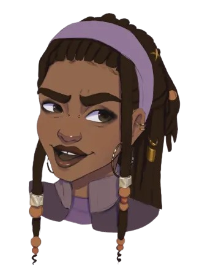
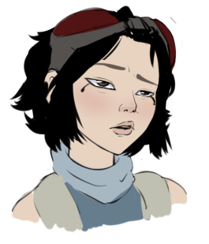
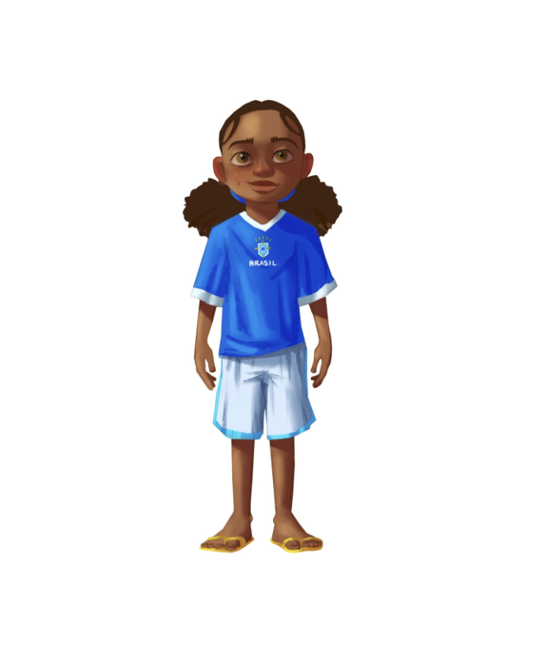

PERSONAL
RIGGING
PIPELINE
This started as a simple question: why am I rebuilding the same arm rig for the fifth time? So I wrote a tool that does it for me. You drop some guide locators on a character, press build, and it generates the whole rig from scratch — joints, controllers, IK/FK, space switches, even the skin weights. Nothing is done by hand in the scene. And because everything is rebuilt from zero every time, the same guides always give you the exact same rig. No surprises.
I built it to rig the characters for O'Paraiso, but at this point it's just how I rig everything. Every character on this site went through it.
PIPELINE
MODULES
The whole thing is split into five pieces, and each one minds its own business. They don't talk to each other through Python memory (that dies the moment you reload) — they write to a JSON cache on disk. Sounds boring, but it's the reason every build comes out the same no matter what state Maya is in.
Keeps track of which character you're working on using Maya's optionVar, which survives even when you open a new scene. The first time you set up a character it creates the whole folder structure for you — models/, build/, guides/, curves/, skin_clusters/ — so every asset looks the same. Each build opens a fresh scene from the model folder. Whatever mess you left in the last session, it doesn't care.
The guides are the only thing you actually place by hand: locators in T-pose. Do the left side, and the right side mirrors itself. Everything gets saved to a JSON file, and the rig is rebuilt from that file every single time. The nice part: if a guide exists, that limb gets built. If it doesn't, it's skipped. That's how the same pipeline handles bipeds, quadrupeds and faces without me writing three separate systems.
Ever spent an hour making controller shapes pretty and then lost them on a rebuild? Yeah. So every character stores its shapes in a .curves file — CV positions, knots, degree, color, everything — and the build recreates them exactly with the Maya API. Cyan for left, blue for right, yellow for center, always. Mirroring a shape is one operation: flip scaleX, freeze, done.
Skin weights live in my own .skc format that only stores the weights that aren't zero — files end up 60–80% smaller than Maya's export. And when a new character has no weights at all, it borrows them from another one: both meshes get mapped into a shared space defined by the skeleton, so the weights land where they should even if one character is twice as wide or has completely different topology. The donor character doesn't even need to be in the scene.
Here's my hill: no constraints. Not a single parentConstraint or orientConstraint in the whole rig — everything runs on matrix nodes (multMatrix, blendMatrix, offsetParentMatrix). The IK/FK blend is a blendMatrix feeding straight into the offsetParentMatrix. Space switches are matrix nodes plus a condition, with the enum right there on the controller. And since every module writes its node names into the JSON cache, the space switches get wired up at the end without caring which module ran first.
BUILD
SEQUENCE
Every build starts from nothing and runs the same eight steps in the same order. No "just fix this one thing in the scene" — if something's wrong, you fix the guides or the code and rebuild. It takes seconds, so why not.
WHY THESE
DECISIONS
parentConstraint adds overhead and an extra node cluttering your Outliner. Matrix rigs run faster, the graph stays readable, and when it's time to export to a game engine there's nothing to clean up.biped.cache and can see exactly which modules ran, what they named their nodes, and where the space switches connect.PIPELINE
TOOLS
Along the way I kept hitting problems the autorig didn't cover — so each one got its own tool. Some took an afternoon, some took weeks. All of them exist because doing it by hand the third time made me angry.
The big one. Skinning a character from scratch takes days; this borrows the weights from an already-skinned character instead. Both meshes get projected into a shared space built from the skeleton, then each vertex looks up its nearest neighbours and blends their weights. Different topology, different vertex count, different proportions — doesn't matter. The donor mesh doesn't even need to be in the scene.
Saves and loads skin weights in my own .skc format, which skips all the zeros — files come out 60–80% smaller than Maya's export. It plugs into ngSkinTools2, finds every skinned mesh in the scene on its own, and exports the whole batch per asset. One click before closing, one click after building.
The companion to the skin transfer: you run it once on a character that's already skinned, and it spits out the weights file plus a pre-computed .skinmap. From then on, any new rig build can pull weights from that character automatically — without ever opening their scene again.
A little shape shop for controllers. Browse a grid of saved NURBS shapes, click one, and it lands on your selected controller — with the right CVs, color and draw settings. Make a shape you like once, keep it forever. Dark UI, because we're not animals.
Switching IK to FK mid-shot usually means the arm pops to a different pose and the animator says words. This is a proper Maya plugin (MPxCommand) that matches the poses before switching, so the swap is invisible. Being a real command, it works from MEL, Python, a hotkey or a shelf button — whatever the animator likes.
My grab-bag of everyday utilities, very much inspired by Morgan Loomis' ml_tools: an Arc Tracer to see the path a controller draws, World Bake for editing animation in world space, a color picker with gradients for controllers, Parent Shape, Reset Channels, and a rotation order switcher. The stuff you reach for twenty times a day.
Runs the model through a checklist before I waste a day rigging something broken: topology, naming, pivots, leftover history, unfrozen transforms — all the classics (based on Roure Osso's Modeling QC Standards, 2023). Each check shows pass or fail, and most failures have a quick-fix button right there. Catches the "oops" before it becomes a re-rig.
A viewport plugin (MPxLocatorNode) that draws a little patch of the mesh on top of each controller, so you can see which part of the body it moves without guessing. The patch takes the controller's color automatically, and one function call spreads them across the whole rig. Animators love this one.
Makes secondary bones get out of the way on their own. You give it some colliders and a target joint, and it wires up a small node network — distances in, a remap, a push out on whatever axis you pick. When something gets close, the bone slides away. All tweakable from attributes on the controller, no simulation, no baking, nothing destructive.
CHARACTERS
RIGGED
Proof it actually works: every character below went through the pipeline, from placing the guides to the final skin — without me touching the scene by hand once.


